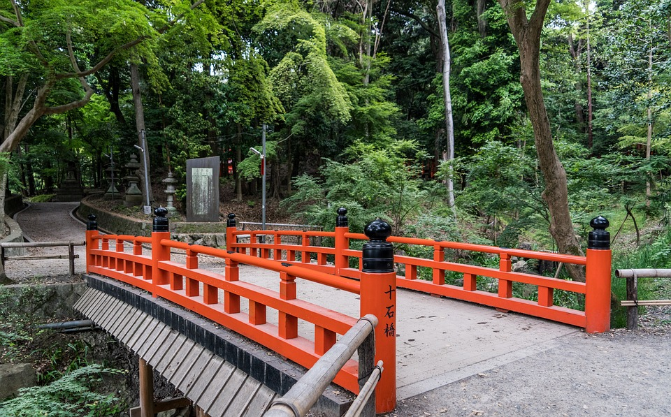
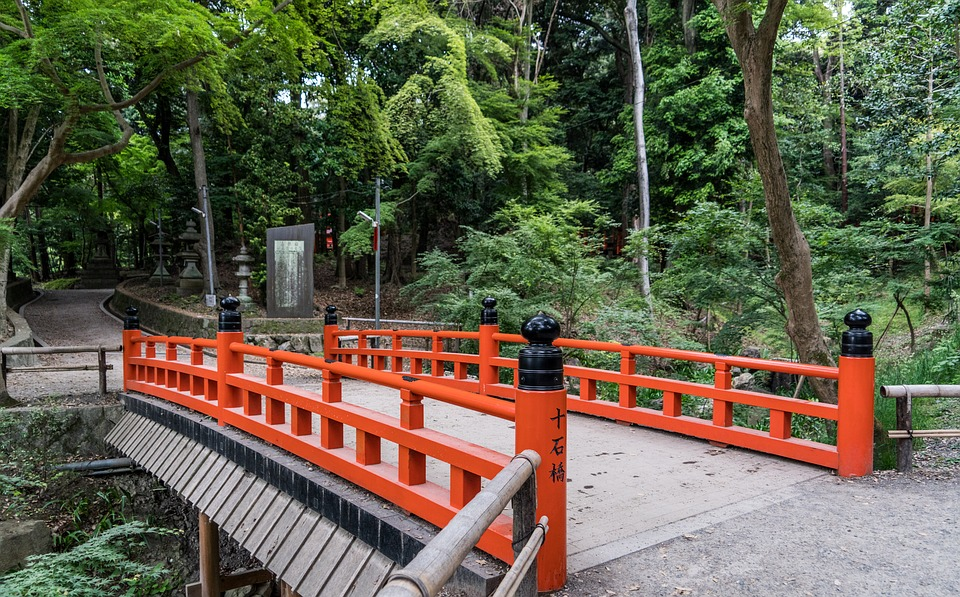
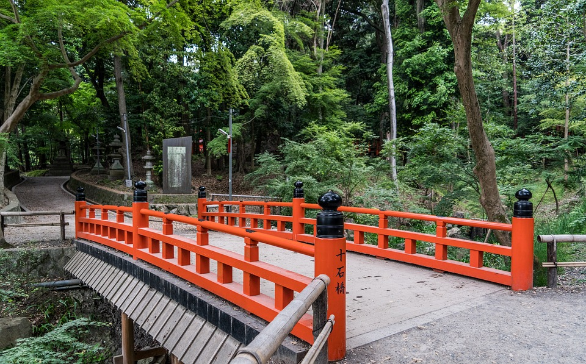

The origin of Fushimi Inari Taisha is described in Yamashirokoku Fudoki, an ancient report on provincial
culture, geography and oral tradition that was presented to the emperor. Irogu no Hatanokimi, an ancestor of
Hatanonakatsue no Imiki, is said to have shot a rice cake, which turned into a swan and flew away.
Eventually the swan landed on a peak of a mountain, where an auspicious omen occurred and rice grew. Inari
is named for this miracle (“ina” is Japanese for “rice”). It has also been described in other ancient texts,
which state that priests such as Hatauji have held spring and autumn festivals at the shrine ever since the
deity Inari Okami was enshrined on a plateau in the Inari Mitsugamine area during the Wado era (708-715).
The shrine became the object of imperial patronage during the early Heian period. In 965, Emperor Murakami
decreed that messengers carry written accounts of important events to the guardian kami of Japan. These
heihaku were initially presented to 16 shrines, including the Inari Shrine.
From 1871 through 1946, Fushimi Inari-taisha was officially designated one of the Kanpei-taisha (官幣大社),
meaning that it stood in the first rank of government supported shrines.
